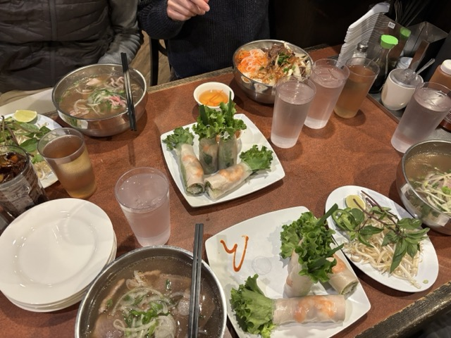

This is an image of Wooju's cat or a cat she knows. She chose the image because it is in her phone's favorites folder. I enjoy how the cat is in a frame of light coming from the door. The photo is generally very minimalistc, which allows you to really focus on the cat. In terms of the obvious and mysterious, there is obviously a cat inside of a home, sitting right inside of the doorway. However, we aren't able to see what is outside besides a single plant, or the rest of the room.
The idea behind this project was focusing on the favorites folder on a phone. I think this is a great starting point, and by incorporating more personal experiences and emotional connection, the project could become more of a story and less just documentation.

Gracie Paterson, 2025
This photo is of pho and spring rolls from one of my favorite restaurants in the Bay Area, Ao Sen. My boyfriend had been coming to this restaurant with his family since he was very little, and after introducing it to me, it became a place we love to come together and with our families.
While my original idea for this project was to make a food map of the Bay Area, when I considered why I loved this restaurant, I realized a lot of it was because of its sentimental value. I want to try to create a project focusing on food in the Bay Area, but make it a story about my life memories and stories behind the food I love.
To make my images more compelling for my project, I was thinking I could make the food in the image clickable, which would grow the selected food and provide different stories about the food and its importance to me. However, I want to keep brainstorming different variations of this project idea and image manipulations to create a project that feels very authentic and significant to me.
Visual Thinking Strategies
I think this article brings up a really important point regarding how quickly people consume content nowadays. With social media, especially platforms like TikTok and Instagram, we’re used to swiping quickly though posts and videos, and I’ve noticed how short my attention span has gotten. However, there are times when it’s necessary to spend more time with an image or piece of writing, especially as a designer. I thought that the methods introduced in this article to increase close reading and visual thinking were interesting, and I want to practice them myself to improve my own viewing habits.
I found a website that is intended to help people find the best career for them. The site uses interesting animations and interactions that definitely caught my eye and made me want to examine the rest of the website. The site uses a large variety of image layouts, such as “polaroids”, layering, and image zoom-ins. However, I almost feel like there are too many images, and I didn’t really know where to look. The images felt somewhat general, and not specific to the information on the website, so I found myself skimming past them.
Overlays Design Pattern
This article provided a great explanation of when and how to best implement modal windows. Because users have been trained to close models, and due to a general lack of trust with pop-ups on websites, all components of a modal must be designed intentionally in order to not dissuade the user from continuing to use the website. Certain practices like the location of the exit button (x) and being able to use the escape button to exit must be used as that is the common practice the users will expect. Additionally, modals must be a result of a user's action, so it is clear the modal is something necessary that they caused, rather than a random pop-up that may appear suspicious. The intention of the modal must be clear and easy to navigate. Finally, the modal window must be accessible to all users in terms of appearance and navigation.
Research Form Design
Something that has become increasingly apparent to me as I’ve learned more about UI/UX design is that you may not notice when a site is designed well, but you definitely will see when it is designed poorly. Most users have experience with many websites and are used to similar practices implemented universally. Because of this, we may not even think about how important the position of the label is, or why it’s so important to show users how much progress they’ve made in the form. This article was a great reminder of practices that I’m used to, but maybe I have never considered how crucial they are, and would then maybe forget to use them myself.
An application that implements these practices well in its forms is Depop. To set up a seller account, you must provide a lot of sensitive info such as your bank account number (so they can deposit the money you make into your account). The form provides explanations when it requests this information to assure the user that it’s legitimate and necessary.